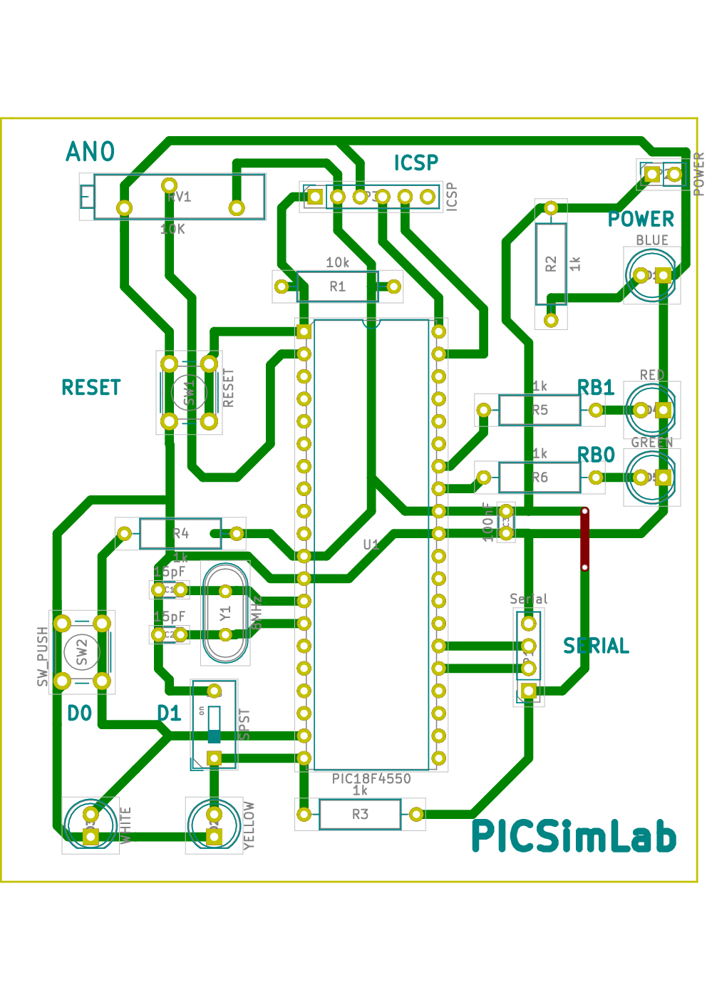

C.1.1 Board Hardware and Schematic
For this tutorial, the board created have the hardware shown in diagram below:
The schematic for the tutorial board made in Kicad.
And the PCB layout was made in Kicad too. The PCB is not necessary if you have a real board.
